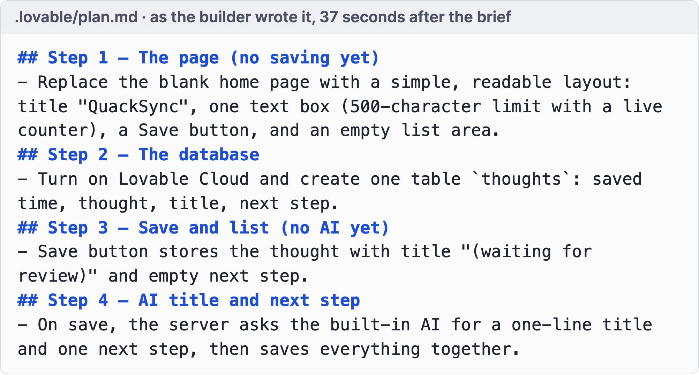
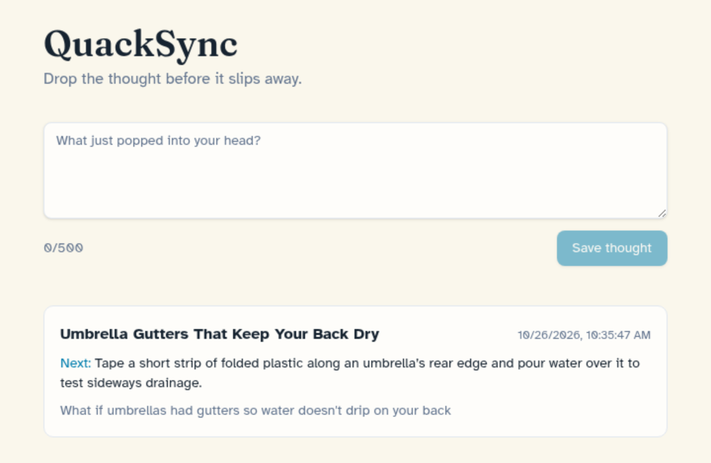
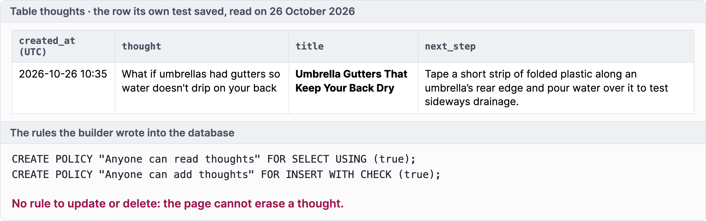

Micro case · QuackSync · build A, a coding agent · step 2 of 6
Ask for a plan, not code
Each step small enough to test. No code before the plan.
Now you · 1 minute
Which step would you cut or split?
The product owner's test: could I try this step myself in five minutes?
Save and list thoughts in a CSV file
Ask the AI model for a title and a next step
Save a thought, with the manual fallback
Render the page
Serve it over HTTP
Micro case · QuackSync · build A, a coding agent · step 3 of 6
One step, one test, one version
Look at two lines: which files changed, and "OK" after the tests. A file you didn't ask for? Ask why, or undo.
Micro case · QuackSync · build A, a coding agent · step 4 of 6
The review caught what the tests didn't
A second agent found that any website could make your browser use it and spend its AI credit. Each finding became one small step.
Micro case · QuackSync · build A, a coding agent · step 5 of 6
Every step is a saved version
Two misses on a step? Go back to the last version and brief again.
Micro case · QuackSync · build A, a coding agent · step 6 of 6
No key yet, and it still works
1Brief
2Plan
3One step
4Review
5Versions
6Result
Both thoughts wait for review. No key was set, so the AI was never asked. A person fills in the title.
Micro case · QuackSync · build B, an AI app builder
Same brief, an app builder: plan first
Plan in 37 seconds, app 3 minutes after the go-ahead, and the AI call worked in its own test


Micro case · QuackSync · build B, an AI app builder
A real database, with rules worth reading
You need not read the code. Read who may read, add, change or delete

Good: no one can erase a thought.
Check: every visitor reads every thought. Before strangers, ask the builder to show each visitor only their own.
Micro case · QuackSync · two builds compared
Both took minutes. They differ in what you own
And in what is left for you to check
Build A · a coding agent
Build B · an app builder
Where it runs
Only on the laptop that built it
In the builder's cloud, behind a sign-in until you publish
Data
A CSV file next to the code
A database table with rules
The AI call
Never ran: faked in the tests, no key set
Worked in its own test, the builder keeps the key
Checks
59 tests, three security reviews by a second agent
3 tests and one real save, no review asked for
First version that ran
3 minutes after the plan, by its saved versions
3 minutes after the go-ahead, 2 Lovable credits
You own
Every line, plain Python
A hosted project, code exportable
Speed matters
One iteration should not take more than
4hours
One iteration runs from the brief to a version a user can try. Longer means it was too big.
Steps inside it take minutes.
Now you · alone
Write the first lines of your brief
Output
Four lines your agent can read
Input 3 of 4 · Build it · the answers
Build it: you own the what, the agent the how
1
Why do AI builds run away from you?
The agent builds whatever you ask, and fast feels like progress
2
How do you steer one without reading code?
Brief once, plan first, one step, test, review, save. Two misses: restart
3
Coding agent or app builder?
Both take minutes. Pick by what you must own and check
Input 4 of 4 · Chapter 6 of 9
Ship it: into users' hands
Put it in front of your segment, watch without helping, fix what stopped them.
Input 4 of 4 · Ship it · three questions
When does a build become evidence?
1
Who counts as a user?
2
How do you know it works?
3
What do you do before you build again?
From your laptop to their hands
Live means a stranger can open it
Four things before you send the link
If you're not embarrassed by the first version of your product, you've launched too late.
Reid Hoffman, co-founder of LinkedIn
Testing your prototype
Friends rehearse. Your segment counts
Without your help
Let them use it alone
One hint and it is a guided demo again
Guided · Solution space (M05) you book the call, you steer
Without your help · from today you publish one link, they decide what to do
Watch what they do
Who came back, and where they got stuck
Returning users, dead clicks and a recording per session
Ask before you record. Consent covers course staff.
Two questions per user
Did they reach the outcome? Did they come back?
Before each iteration
Four questions before you build again
Where you stand
A slice that works is signal until someone pays
Your MVP is built to be paid for. Until someone pays, it is a functional prototype
Don't struggle alone
One leads the build. Everyone brings users
Now you · in your team
Who gets the link today?
Output
Five names and a way to watch
Input 4 of 4 · Ship it · the answers
Ship it: used, not clicked
1
Who counts as a user?
People from your segment. Friends only rehearse
2
How do you know it works?
They reach the outcome without your help, and come back
3
What do you do before you build again?
Fix what stopped them, cut what nobody used, ask the four questions
Chapter 7 of 9
Wrap-up and check-out
Map it, shrink it, build it, ship it, in four pictures and three questions.
Wrap-up · Map it
Five parts, one tagged by hand
Wrap-up · Build it
The agent loop
4 hours max per iteration
Wrap-up · Ship it
Rung five, signal until someone pays
Reflection 1 of 3 · the content
The Content – What could you apply
🛠️
What could you apply?
🤕
What gave you a hard time?
Reflection 2 of 3 · the process
The Process – Man vs. Machine
🤖
Where did AI actually help you?
🧠
Where was your genius needed?
🕴️
What are your best hacks to share?
Reflection 3 of 3 · the results
Rose, thorn, bud
🌹
What was the breakthrough today?
🌵
What was the hardest part today?
🌱
What is an idea/feature you didn't have time to finish, but want to explore later?
Homework until next time
Put your MVP live, let 10 people per student from your segment use it without your help, and ship 2 fixes for what stopped them.
10users each
The learning floor is a live MVP per team, 5 such users per student and 1 fix.
Your line: fewer than 3 of your first 10 users reach the outcome by Module 07, and you rebuild the feature. Nobody comes back unprompted, and you bring a pivot.
Homework · how to do it
Hand it over. Watch. Fix what stopped them
1
Split the work. One leads the build, everyone brings users.
2
Invite first buyers, then sign-ups, then your segment's groups.
3
Watch without steering. Mute yourself or watch a recording.
!
Watch out. One hint makes it a guided demo.
4
Ask four questions before each build. Does it match the problem? For whom is it 10x better? Can you build it in 4 hours? How does it reach them?
5
Fix what stopped them, cut what nobody used. Two misses? Restart from your last version.
6
Keep their data. Never wipe it. Collect only what you need, and say where it goes, AI included (Legal Basics).
7
Keep the ask. Show your price. An early payment counts.
8
Get a blind second opinion. Give an AI your raw records, minus hypothesis and names. Note where it disagrees.
Homework · what you come back with
Good is used, not clicked
GOOD
WEAK
MVP
One feature, real input to outcome, 23 versions
Five features, "almost works"
Users
31 recruiters without help, 14 got their nudge, 6 came back
12 friends clicked
Fixes
"Nobody found Add." Moved, 3 more reached it
Dark mode
References · 1 of 2
Sources in this deck
How to read the source lines. Research: a published study. Data: dated records. Framework: a published method or guide. Bastian: the course's own material. Illustrative: a made-up example.
Ambitious Entrepreneurship. Framework 02, Validation Hierarchy, the Glossary and the course resource Best Practices: Coding with AI. Course files.
Graham, P. (2013, July). Do things that don't scale. paulgraham.com/ds.html.
Veracode. (2025). 2025 GenAI Code Security Report. Vendor report, quoted in the talk track of the review slide.
Ries, E. (2011). The Lean Startup. Crown Business.
Design Council. (2004). The double diamond, as drawn in the course.
See you next time!
Module 06 · Prototyping with AI · Workshop · 90 minutes
Workshop: Build it, then hand it over
Map the parts, build in small steps, and send the link before you leave.
Workshop · step 1 of 3
Map the parts
1STEP 1 · 20 MIN
MAP THE PARTS
Know what must work.
Draw your MVP: interface, logic, database, outside services.
Mark each part: must work, or by hand for now.
Workflow or app? Would a form and a sheet do?
Write the brief: user, feature, input, outcome, manual, not-to-build.
Output A map and a brief.Minutes 20
Workshop · step 2 of 3
Build in small steps
2STEP 2 · 50 MIN
BUILD IN SMALL STEPS
Real input runs through to the outcome.
Load the brief as project instructions. Plan first, no code.
One step at a time: ask, read the change, test, save.
Two misses on one step? Restore and brief again.
Wire the one API call. Keep the key out of the interface.
Publish on your tool's hosting. Point your page's button at it.
Output A live link, versions saved.Minutes 50
Workshop · where things live in your tool
Same steps, different buttons
New tonight? Take your own idea: one user, one feature, the four parts
App builder, for example Lovable
Coding agent, for example Claude Code
Brief
Project knowledge, in its settings
A CLAUDE.md file in your folder
Save a version
Automatic, every edit in its history
A saved version (a commit) after each step
The AI call
Its built-in AI, or a key in its secrets
A key in an environment variable
Your data
Its own database, read its rules
A file or a hosted database you pick
Live link
Its publish button
A host, see Prototype to product (M09)
Workshop · step 3 of 3
Happy path, then hand it over
3STEP 3 · 20 MIN
HAPPY PATH, THEN HAND IT OVER
First users today.
Log your line, dated, before the first user.
Run the happy path: real data in, watch it run, outcome out?
Send the link to your Solution space (M05) first buyers. Don't steer.
Commit to the bar. Pick floor or full. Set a midweek day.
Output A dated line, users invited, targets, midweek day.Minutes 20
Arrived empty-handed?
Build the smallest slice that works
No winner? Build your best dummy's feature. Back at the problem? Build the smallest working slice, you behind the screen, and invite your interviewees.
Homework until next time
Put your MVP live, let 10 people per student from your segment use it without your help, and ship 2 fixes for what stopped them.
10users each
The learning floor is a live MVP per team, 5 such users per student and 1 fix.
Your line: fewer than 3 of your first 10 users reach the outcome by Module 07, and you rebuild the feature. Nobody comes back unprompted, and you bring a pivot.
See you next time!
Module 06 · Prototyping with AI · Case discussion · about 90 minutes
Case discussion: Langfuse
Stand with three founders deciding which borrowed part to replace first as strangers arrive.
Vote 1 · 16:00 UTC, 29 August 2023
What do the founders replace or build first?
A · Open analytics on an open-source tool for every user
B · Integrate OpenTelemetry
C · Model-based evaluations and labeling, their stated next step
Timeline · 2023
Fifteen weeks from first commit to strangers
Date
Event
18 May
Repository created, "kill all", a fresh "init"
26 May
"v1"
1 June
Accounts and a hosted cloud
7 June
Sign-up by form, website button books a call with a founder
26 June
Public sign-up, "Get started by yourself" next to "Guided onboarding"
Date
Event
17 July
Analytics on Looker Studio for flagged users
14 August
Demo project for every new user
20 August
Top product of the day on Product Hunt
29 August, 16:14 UTC
Show HN
Exhibit 3, selected rows
What a new user met on 29 August 2023
What
State on 29 August 2023
Since
Start screen
"Create new project" (get started by yourself), "View demo project" and "Guided onboarding" (a call with a founder)
26 June, as on 27 August
Demo project
View-only, live data from the documentation chatbot
14 August
Dashboards
Traces, token usage by model, scores, per-user views, for every user
By 27 August (video)
Analytics (Looker Studio)
For users with the flag "analytics-alpha" only. Others saw "Analytics is in closed alpha" and an invitation to get in touch
17 July
Support
Feedback button, support chat offered while setting up a project, a Discord community
23 June, 29 July
Account
No way to change or reset the password
Open issue of 21 August
In the founders' words · 29 August 2023
Half a day, or a debt?
"Integrating Looker Studio got us to first analytics charts in half a day."
"As it is not open-source and does not work with our UI/UX, we are looking to switch it out for an OSS solution to flexibly generate charts and dashboards."
Board plan
Mark what still needs a founder
Columns: borrowed and why · what it costs a stranger · what they knew about use · what they would need to know. Votes top right.
Use without help · on 29 August 2023
What did they know about use?
One user, many hours a day as Deichmann reported it
Alpha users onboarded every week the July update
Five named teams on the landing page
370 stars, 21 forks fifteen minutes after the post
No published number for sign-ups, active users or returning users.
Vote 2 · same question
What do the founders replace or build first?
A · Open analytics on an open-source tool for every user
B · Integrate OpenTelemetry
C · Model-based evaluations and labeling, their stated next step
Bridge · to your own build
Mark what still needs you
Langfuse let strangers in with a call, a chat and a flag still in place. Now draw your own MVP on the four parts and mark what still needs you.